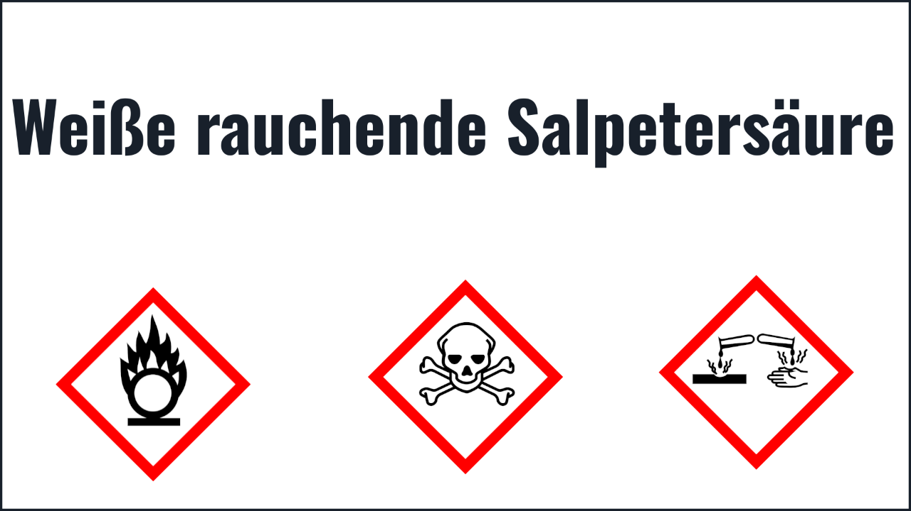
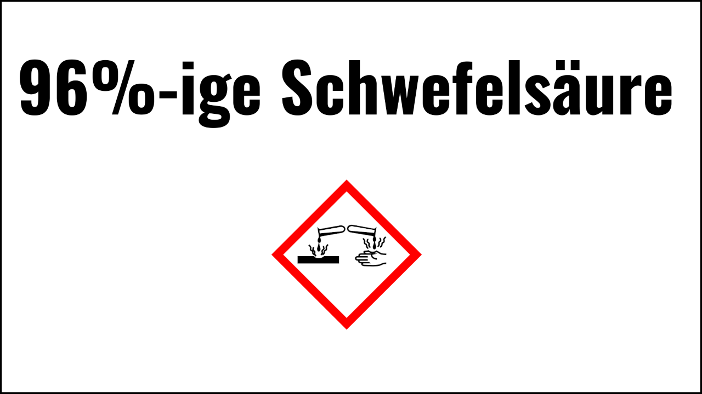
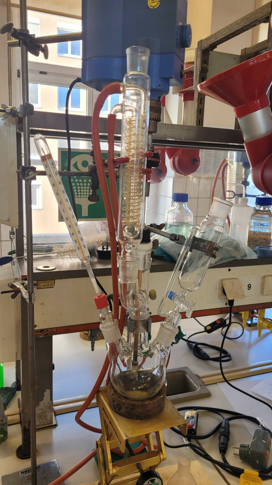

Synthese

Herstellen der Nitrierlösung
- Mischen von weißer rauchender Salpetersäure und konzentrierter Schwefelsäure im Verhältnis 2 zu 5
- Abmessen von 40ml weißer rauchender Salpetersäure und 100ml konzentrierter Schwefelsäure
- Alles unter guter Kühlung vermischen
- Abmessen von 40ml weißer rauchender Salpetersäure und 100ml konzentrierter Schwefelsäure
- Alles unter guter Kühlung vermischen


1. Nitrierungsschritt
- 35ml Toluol aus dem Tropftrichter langsam und unter Rühren zur Nitrierlösung zutropfen
- Temperatur gering (<75°C) halten um Oxidation zu vermeiden
- 30min. unter Konstantem Rühren reagieren lassen
- Temperatur gering (<75°C) halten um Oxidation zu vermeiden
- 30min. unter Konstantem Rühren reagieren lassen
2. Nitrierungsschritt
Temperatur langsam anheben (5K/min) und zwischen 75-80°C für 2h halten